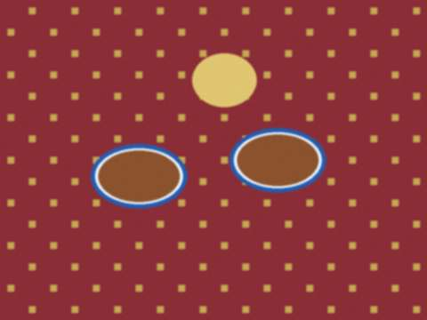

Feb222009
Auntie Raisa is 60!
Sunday, February 22nd, 2009 at 8:30 pm by meerimThe winter stairwell kitchen turned into a birthday party! Auntie Raisa from floor 3 is 60 and the whole stairwell brought her something: a scarf, pelmeni (of course), a bottle of jam from 2004, and six candles on a cake that ran out of candles.

her table. the pelmeni plate is on the left, the samovar in the middle, the jam in the right, untouched since 2004.
She said "I'm only celebrating because the building cooked together for six weeks and survived". Cheers to the building!!!